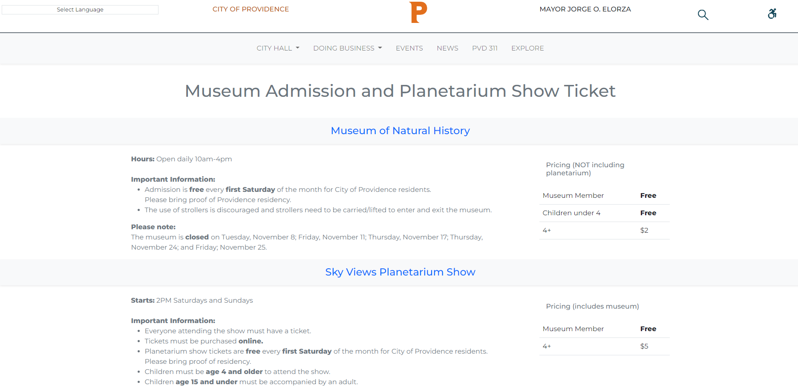

Part 2: Visual Redesign
Low-fidelity Wireframing
Visual Design Style Guide

High-Fidelity Prototyping
Please follow the link to the Figma page or enter fullscreen so you may find annotations for each element.
Part 3: Responsive Redesign
Redesigned and Responsive Museum of Natural History Website
